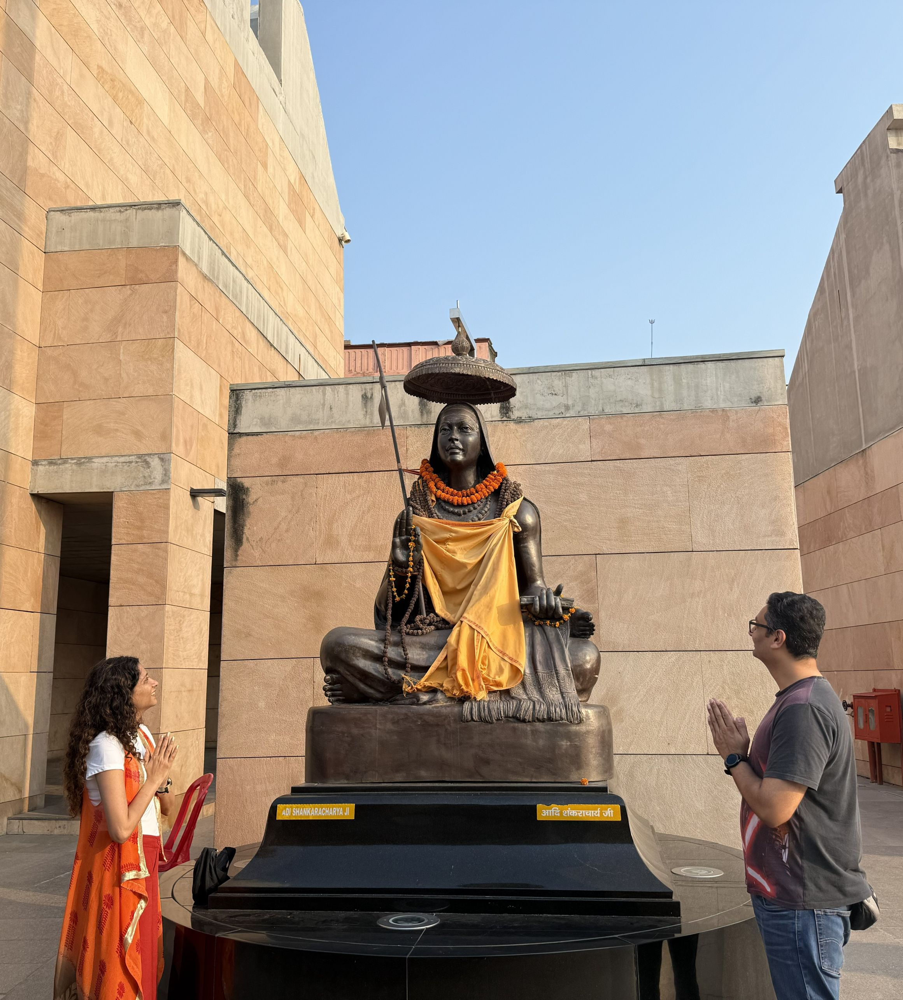

Born from devotion. Built for discerning pilgrims.

"We didn't find the journey we deserved — so we built it."
Like most Indian families, we grew up going on pilgrimages every year. We travelled to temples large and small across India – at different stages of life, for different reasons and seasons, with family, with friends, and sometimes on our own. These are among our fondest memories.
But in almost every pilgrimage, certain challenges were consistently present. The logistical chaos, the hotels that were very different from what their websites portrayed, the crowded temple queues with no guidance, even getting basic information about temple timings and puja bookings was a challenge.
And sometimes it wasn't even us travelling - it was our parents and relatives, with us organising everything from a distance. We worried about their safety and comfort, whether touts were taking them for a ride, if they were having hygienic food, and most importantly - what could we do if there was a medical emergency?
We kept coming back to one question: what if someone who knew these temples deeply, had real relationships on the ground, and genuinely cared about the sanctity of pilgrimages, handled everything?
That question led us to create Saum.
Two accomplished professionals driven by a shared reverence for India's sacred heritage and an uncompromising standard for guest experience.
Meghana grew up in a family that has been in the business of distributing religious products for four generations, the company being one of the largest distributors of regulated sandalwood products in Mumbai with a legacy of over 95 years. She herself has been a communications professional with 18+ years of experience across startups, finance, and lifestyle - including stints at udaan and Ambit. She advises institutions like IIM Kozhikode and Marcellus Investment Managers on brand strategy.
Meghana holds a BCom from Jai Hind College, a MCom from Mumbai University, and a PGDBA from KC College, Mumbai. At Saum, she brings together that rare combination of generational knowledge and professional rigour, ensuring that every journey is not just well-organised, but thoughtfully crafted for the discerning traveller.
Nihal comes with over 20 years of leadership experience in IT and startups. Comfortable wearing multiple hats across strategy, technology, operations, and marketing, he has spent the last decade advising companies on AI and deep tech adoption. He has also helped startups navigate their 0 to 10 and 10 to 100 journeys. Nihal also founded Deep Tech Stars, one of India's most active AI developer communities - built from the ground up by bringing together tens of thousands of developers, practitioners, and researchers in AI, as well as partner organisations like Google, NVIDIA, Microsoft, Sarvam, GroupM, International Red Cross and more.
Nihal holds a BE in Computer Science from RVCE Bangalore and an MBA from ISB Hyderabad. At Saum, he brings the same entrepreneurial energy and cross-functional versatility that has defined his career - now channelled towards not just building a pilgrimage experience that is seamless and trustworthy, but also an enduring community of spiritual seekers and travellers.
We understand that a pilgrimage is not just any trip - it is a very important undertaking and often the fulfilment of a long-held intention. So we treat each trip with the utmost reverence.
mātṛdevo bhava |
pitṛdevo bhava |
āchāryadevo bhava |
atithidevo bhava ||
-Taittiriya Upanishad
We consider our guests as family. We'll go out of the way for anything that is important to you, just like we would for our own family.
When you are well-rested and unhurried, you arrive at the sanctum with calmness and focus. Let us remove the exhaustion and anxiety from your physical journey so that you can focus on your spiritual one.
When older parents or grandparents are travelling, their comfort, safety, and dignity shape every decision we make. The right activities at the right pace with the right support - all considered before you even have to ask.
Every hotel, every meal, every activity we suggest for you, we have hand-picked after experiencing them ourselves. And our standards are very high.
If something changes, you will hear it from us first. We believe that a quick, honest call in a difficult moment is worth far more than silence followed by an apology.
These are not principles we arrived at in a boardroom. These are simply what we would want for ourselves and our families. And that, more than anything, is why we started Saum.
Let us take care of every detail so you can focus on what really matters.